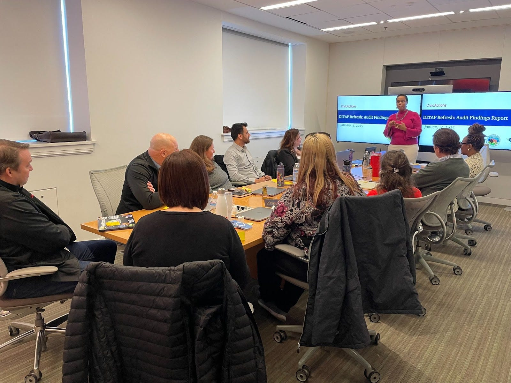
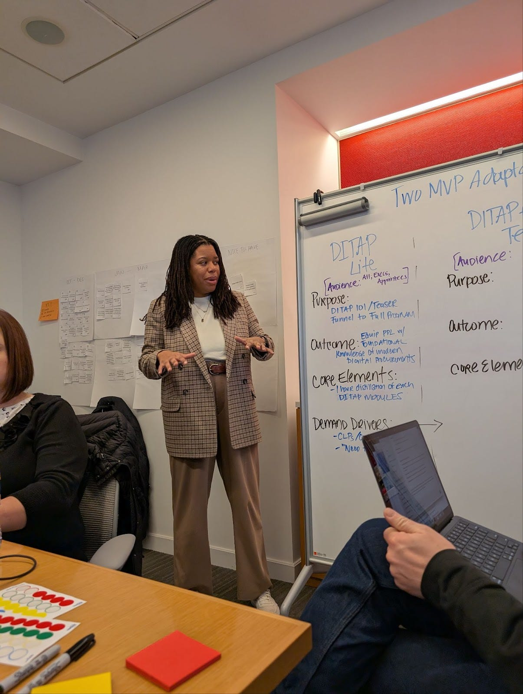
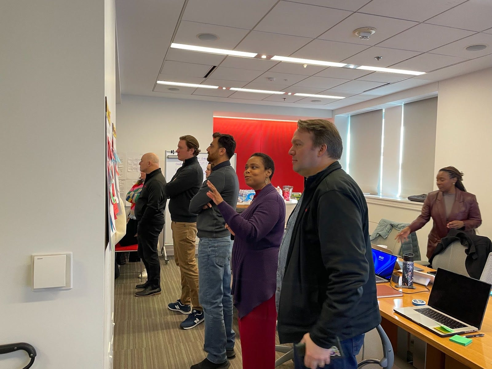
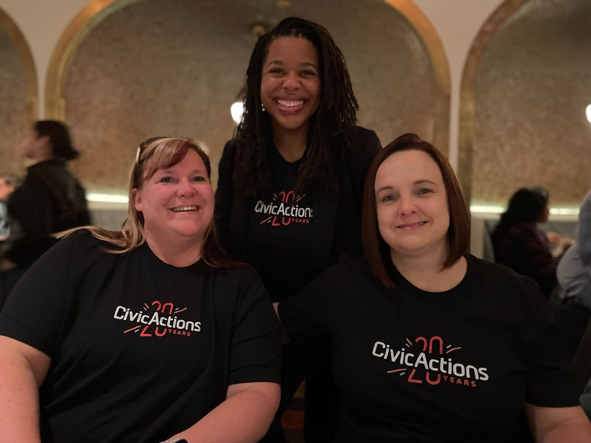

At CivicActions, we’re passionate about equipping acquisition professionals with the skills they need to succeed in an increasingly digital world. That’s why we’re thrilled to be leading the charge on modernizing the Digital IT Acquisition Professional (DITAP) curriculum. On January 14–15, 2025, we presented our curriculum audit findings and kicked off the instructional design phase of this ambitious project with a strategic planning onsite at the General Services Administration (GSA) in Washington, D.C.
This effort builds on an exciting milestone: CivicActions was awarded the DITAP refresh contract by the United States DOGE Service, formerly known as the United States Digital Service (USDS) last year. Over the past few years, we’ve proudly delivered DITAP training to federal contracting professionals alongside other USDS training partners, graduating over 350 professionals across 30 agencies. This new project represents a leap forward in our mission to future-proof the program, fostering lasting improvements through open and collaborative best practices.
The strategic planning event brought together representatives from USDS, the Digital Services Coalition (DSC), CivicActions, and our partners (TandemGov and Experience Institute). It was an incredible opportunity to align on the vision for a refreshed DITAP curriculum that meets the evolving needs of federal acquisition professionals.

Our work involves a thorough audit and assessment of the current program, modernization of the curriculum with realistic scenarios and case studies that reflect on-the-job challenges, and the creation of a flexible, evergreen curriculum adaptable for various acquisition workforce members and digital service topics.
What We Accomplished Together
Laying the Groundwork for MVP Adaptations We identified two exciting adaptations to make the program more accessible and impactful:
- DITAP Lite: A streamlined version designed to cover foundational procurement knowledge for senior leaders and executives.
- DITAP for Program Managers: A specialized track to enhance procurement team effectiveness and instill an appreciation for product management discipline across the acquisition team.

Bringing Learning to Life We agreed to focus on experiential learning in the redesigned curriculum, i.e. hands-on activities and real-world case studies that make learning practical and engaging.
Strengthening Shadowing Opportunities Shadowing is such a valuable part of DITAP, and we’re making it even better. A new playbook, diverse vendor partnerships, and tools to help participants find meaningful shadowing opportunities are all on the way.
Refreshing Curriculum Design By focusing on the program’s strengths, we identified ways to make the curriculum even more engaging and rigorous through clearer expectations and more experiential learning.
Listening and Learning We’re building a structured feedback process to bring in insights from alumni, stakeholders, and subject matter experts (SMEs). This ensures the curriculum stays relevant and responsive to the needs of federal acquisition professionals.
What’s Next
We’re excited to keep the momentum going with these next steps:
- Finalizing and designing the MVP adaptations to ensure they’re impactful and easy to use.
- Developing resources like shadowing playbooks and vendor toolkits to support participants every step of the way.
- Interviewing agency leaders and alumni to refine the curriculum and validate our approach.
- Mapping out user journeys to make experiential learning activities as effective as possible.

Looking to the Future

We wrapped up the event with a shared vision: to transform DITAP into a future-proof, scalable program that meets the needs of ALL acquisition professionals, not just 1102s. This contract award highlights USDS’s commitment to innovation and excellence in digital IT acquisition, and we’re honored to lead this transformation. By modernizing DITAP, we’re not just improving a training program — we’re empowering professionals to navigate the complexities of digital procurement and deliver better results for the public. Together, we’re building a stronger future for federal acquisition.
If you’re ready to take your skills to the next level with a DITAP program that’s shaping the future, learn more about CivicActions DITAP.